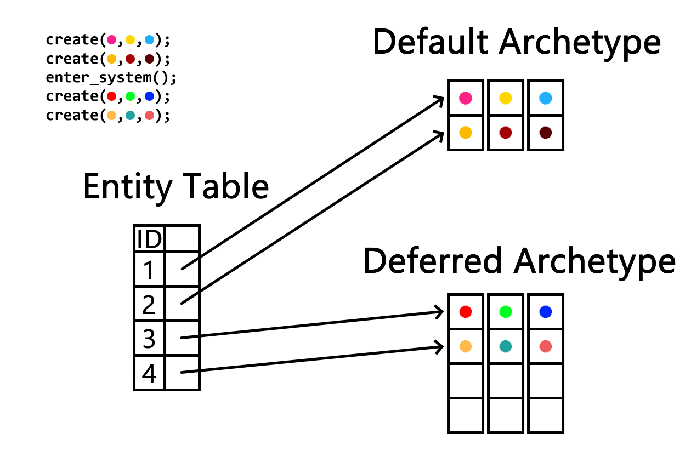
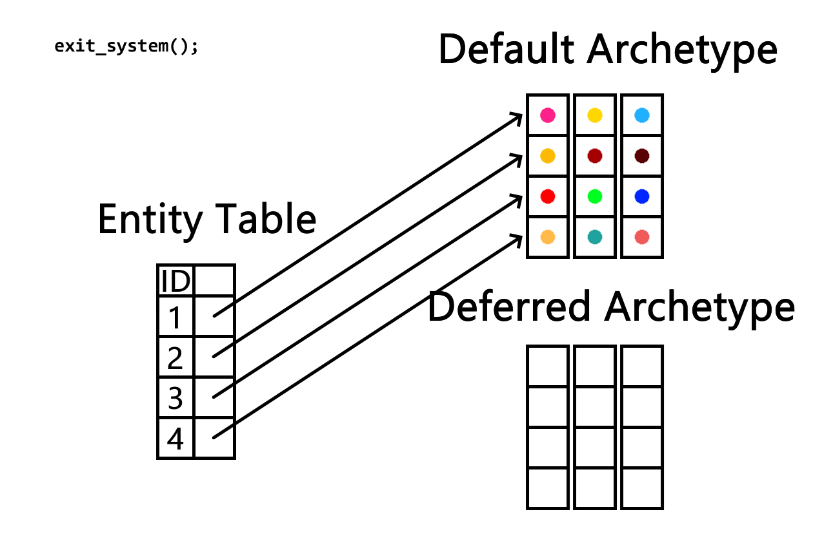

Creating Entities at Anytime in ECS
05/18/2025
Note: this mainly applies to archetypical ECS
In many ECS libraries, you cannot create entities when a system is running. Instead, you defer changes to a command buffer, which replays the changes after the system is over. This makes code more verbose, run slower, and means newly created entities cannot be used immediately, often not until the next frame.
Here's an example for Arch ECS, though it is similar for almost all archetypical ecs libraries. The normal entity creation is clean and readable, but creating entities with a command buffer is much more verbose and also slower, as components need to be indexed and copied multiple times.
// without command buffer Entity entity = world.Create(1, 2f); // with command buffer ComponentType[] types = [Component<int>.ComponentType, Component<float>.ComponentType]; Entity entity = cmdBuffer.Create(types); cmdBuffer.Set(entity, 1); cmdBuffer.Set(entity, 2f);
But there is no hard rule that archetypal ECS cannot create entities during system execution.
Implementation
The main concern with creating entities during systems is that creating entities may invalidate component buffers given to the user, such as when resizing. The solution is to create a second archetype where new components can be stored if they cannot be added to the default archetype. In addition, the usage of an archetype allows the entity record/location/node to point to this new archetype, making the experience of creating entities seamless. A list of all deferred archetypes that are used should also be kept.

Next, once system execution is finished, components should be copied back into their original archetypes and entity records updated.

Performance
Deferring entity creation in this manner is much faster than a command buffer. If many entities are created in same archetype, they can copied back in bulk instead of individually looked up again and again in tables. But the largest Performance benefit is what it allows us to do. Since we covered the case where there is not enough space in an archetype, the hot path becomes directly adding components to the regular archetype. In other words, there will be no Performance difference when creating an entity during a system execution!
Thoughts
In my opinion, command buffers in general are a point of high friction in an ECS, with the most annoying part being entity creation. It was especially important for me to fix this problem because in my ECS/ECF most entity creations end up being in the middle of an update with no way to extract them out.
In a similar way, I think it's possible to also implement entity deletion during system execution, although I don't think it's possible to implement adding/removing components during system execution. I would love to be proven wrong here though.